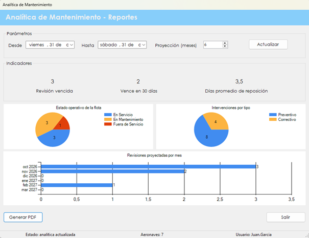

Resume el estado de la flota con indicadores y gráficos, y estima la carga de revisiones de los próximos meses.
Esta pantalla ofrece una vista general para planificar el mantenimiento: cuántas aeronaves tienen la revisión vencida o a punto de vencer, cómo está compuesta la flota según su estado, qué tipo de intervenciones se hicieron y cuántas revisiones se esperan por mes.
Es una consulta: no modifica datos. El resultado se puede guardar en un documento PDF.
Desde el menú principal, en Reportes › Analítica de Mantenimiento. La opción aparece si el rol del usuario incluye la patente correspondiente. Al abrir la pantalla, la información se calcula automáticamente.

| Control | Para qué se usa |
|---|---|
| Desde y Hasta | Definen el período del gráfico Intervenciones por tipo. No afectan al resto de la pantalla. |
| Proyección (meses) | Cantidad de meses del gráfico Revisiones proyectadas por mes. |
| Actualizar | Vuelve a calcular toda la información con los parámetros elegidos. |
| Generar PDF | Se habilita después de calcular. Guarda el documento y lo abre. |
| Salir | Cierra la pantalla. |
| Barra de estado | Muestra el estado de la pantalla, la cantidad de aeronaves activas y el usuario. |
| Indicador | Qué muestra |
|---|---|
| Revisión vencida | Cantidad de aeronaves activas cuya próxima revisión es hoy o una fecha anterior. |
| Vence en 30 días | Cantidad de aeronaves activas cuya próxima revisión cae después de hoy y dentro de los próximos 30 días. |
| Días promedio de reposición | Promedio de días entre la solicitud y la recepción de los repuestos ya recibidos. Considera todas las recepciones registradas, no solamente las del período elegido. Si todavía no hay ninguna, muestra "Sin datos". |
| Gráfico | Qué muestra |
|---|---|
| Estado operativo de la flota | Cuántas aeronaves activas hay hoy En Servicio, En Mantenimiento y Fuera de Servicio. |
| Intervenciones por tipo | Cuántas intervenciones de tipo Preventivo y Correctivo se iniciaron entre las fechas Desde y Hasta. |
| Revisiones proyectadas por mes | Cuántas revisiones se estiman en cada mes, desde el mes en curso y por la cantidad de meses elegida en Proyección (meses). |
El gráfico Revisiones proyectadas por mes no muestra revisiones agendadas. Son revisiones estimadas a partir del intervalo de revisión de cada aeronave:
Cómo leer el gráfico. Una misma aeronave puede sumar varias revisiones si su intervalo es corto. Además, las aeronaves con la revisión vencida cuentan en el mes en curso.
| Situación | Qué significa y qué hacer |
|---|---|
| "La fecha hasta no puede ser anterior a la fecha desde." | El período está invertido. Hay que corregirlo y presionar Actualizar. |
| "Error al calcular la analítica:" seguido del motivo | La información no se pudo calcular. Después de los dos puntos se indica la causa técnica. |
| "Debe actualizar la analítica antes de generar el documento." | Hay que presionar Actualizar y esperar el resultado. |
| "Error al generar el documento:" seguido del motivo | El PDF no se pudo crear. Después de los dos puntos se indica la causa técnica. |